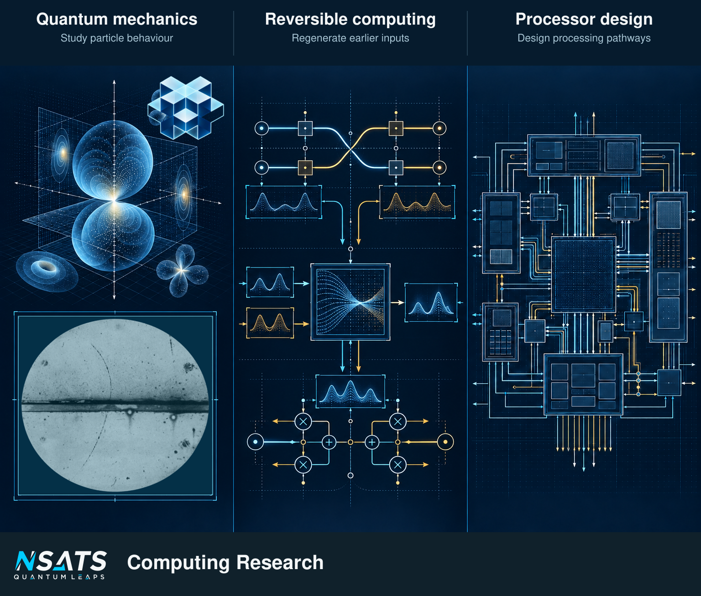

NSATS licenses intellectual property in two technology portfolios: Quantum and Geomagnetism. The technologies address how electronic systems compute and manage information, and how devices determine location using Earth’s magnetic field.

Research spanning quantum mechanics, reversible computing and processor design. [1]
NSATS licences enable classical devices to perform operations based on quantum mechanics, at room temperature. The Quantum portfolio applies computational relationships drawn from quantum mechanics to classical electronic systems. It covers reversible computing, temporal compression, memory, chip design and data movement. The technology enables systems to perform calculations faster, hold more information within a given storage resource and transfer it faster between components or connected systems, with implementation through licensed intellectual property.
The Quantum overview also brings together implementation considerations and reading routes for decision makers, developers, and researchers and students.
The Geomagnetism portfolio concerns location determination using Earth’s magnetic field. The technology is developed and available under licence, and supports positioning without reliance on live GPS satellite signals. Its intended directions are underground, on the surface, in the air, underwater, indoors and in dense urban areas. Licensees can incorporate the technology into their chips, embedded hardware, devices and systems that use position information for an operational, inspection or user task.
From the Geomagnetism overview, the implementation route follows the use of position information in equipment; the overview also addresses positioning resilience when operating conditions change and location within an operational task.
Explore Data centres, Data processing and storage, Memory and storage, Location, and Routers and networking. The Quantum portfolio serves decisions about facility capacity, the cost of delivering data services, component design and network performance. The separate Geomagnetism portfolio serves equipment that needs a backup position source. Choose an area to connect the licensed technology to your operating requirements and the implementation your organisation is considering.
NSATS sells technology licences, not chips. Its technology helps licensees manufacture their own chips. Licensees build software, chips, devices and systems incorporating the relevant technology. A licensing discussion starts with the intended use and implementation scope.
The licensing preparation route separates the application, the intended implementation and the decision the project needs to make.